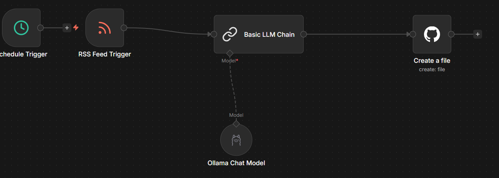

Veille Technologique : Automatisation & IA
Ma veille technologique porte sur l'évolution du framework Ox (Overextended) pour FiveM. Pour traiter efficacement la masse d'informations techniques, j'ai conçu un pipeline d'automatisation exploitant l'IA.
1. Architecture du Pipeline (Workflow n8n)
Le workflow repose sur une suite de nœuds orchestrés dans n8n. Il surveille les flux RSS des dépôts GitHub pour détecter les nouvelles mises à jour techniques.

- Trigger : Surveillance programmée des flux RSS.
- Basic LLM Chain : Connexion à un modèle de langage (Ollama/Llama 3) pour l'analyse sémantique.
- GitHub Node : Injection automatisée du contenu traité dans le dépôt de mon portfolio.
2. Prompt Engineering : Configuration de l'Expert IA
Pour garantir la pertinence des résumés, j'ai configuré l'IA pour agir en tant que Lead Developer expert en FiveM et Lua.
"Ta mission : Ne fais pas juste un résumé. Analyse cette mise à jour pour un développeur Junior et explique le contexte. Analyse : Qu'est-ce qui a changé techniquement ? Dictionnaire : Si des termes techniques sont mentionnés (ex: statebag, inv_busy, hooks), explique brièvement ce que c'est et à quoi ça sert dans FiveM. Impact : Est-ce que c'est critique ? Est-ce que ça améliore la performance ou la sécurité ? Réponds en français, avec un ton professionnel et pédagogique."
🔴 Flux de Veille Automatisé (Live)
📁 Archives de Veille
Retrouvez ici l'historique complet...